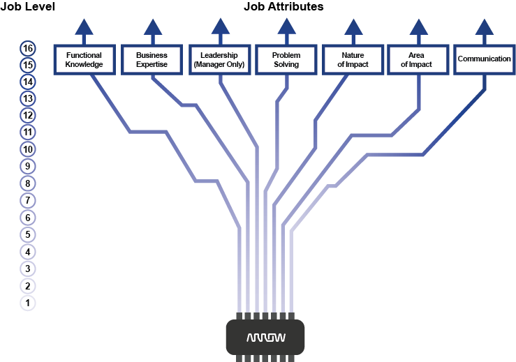

We’ve designed this interactive tool to help you envision and plan your career path at Arrow, and see how your interests, skills and goals align with the needs of the organization. First-time user? Click here
Job Level Explaination

Many factors go into leveling a job. As the job level increases, the job requirements become more complex.